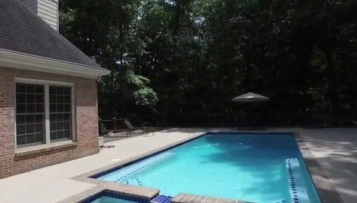

Abstract
We address the task of long-video, camera-controlled generation from a single image. The dominant autoregressive paradigm suffers from two key limitations: (1) error accumulation over time, as distant frames are conditioned on previously generated outputs rather than ground truth, leading to drift; and (2) ambiguity in how to incorporate camera control. Standard solutions to both—such as self-forcing and conditioning on explicit 6-DOF poses—either incur significant computational overhead or produce drifting scene geometries over time.
We propose a simple and lightweight framework that combines autoregressive generation (WanAR) with hierarchical long-context denoising (FixAR). To enforce scene geometry remains consistent with input cameras, we draw from feed-forward novel-view synthesis and reformulate video generation as a warping-and-inpainting problem. To mitigate drift, we introduce a hierarchical denoising strategy in which different stages condition on different temporal histories. Specifically, we first generate frames conditioned on the immediate past, and then refine them using a second denoiser conditioned on a temporally subsampled long-range history to enforce global consistency. This fine-to-coarse scheme enables each generated frame to effectively condition on the full temporal context without incurring a prohibitive cost. Experiments on RealEstate10k and DL3DV demonstrate that WanAR+FixAR outperforms prior methods for camera-controlled long-video generation, producing results that are both temporally stable and consistent with input camera trajectories.
Method
Roll out, fix keyframes, interpolate
We use a hierarchical denoising strategy in which different stages condition on different temporal histories. WanAR rolls out the video chunk by chunk, conditioned on the immediate past. FixAR then refines temporally subsampled keyframes conditioned on a long-range history to enforce global consistency, and InterpolatAR fills in the frames between them. For camera control, each rollout is posed as warping and inpainting, with depth aligned to the scale of the input cameras.

Autoregressive rollouts
Each rollout lifts its anchor frame to 3D with depth aligned to the input cameras, warps it into the next chunk of cameras, and inpaints the chunk with WanAR. The last generated frame anchors the next rollout. Rollouts only see the immediate past, so errors accumulate (drift).
Example with 230 frames: three WanAR rollouts, then 49 FixAR keyframes. The timeline has one cell per two frames. WanAR, FixAR and InterpolatAR share the Wan2.1-14B architecture with separately trained LoRA checkpoints. The full three-stage pipeline can be repeated autoregressively to generate longer videos.
Hierarchical denoising mitigates drift
Same input image and camera trajectory as above. WanAR exhibits drift over long rollouts, while FixAR mitigates the drift and cleans up accumulated artifacts.
Comparison
Side by side with eight baselines
We compare with camera-controlled video generation methods (WorldWarp, DFoT, VMem, Lingbot-World) and warp-and-inpaint novel-view synthesis methods (TrajCrafter, CogNVS, VACE, ViewCrafter). Every method starts from the same input image and follows the same camera trajectory. Pick a scene, then a baseline from the live strip. We show the first 200 frames of each RealEstate10K trajectory and the first 400 frames of each DL3DV trajectory, centre-cropped to squares as in our evaluation protocol.
Outputs of different methods have different native resolutions and frame counts: VMem produces every 10th frame, so they play at a lower frame rate.
Quantitative results
Reconstruction metrics (PSNR, SSIM, LPIPS), distribution metrics (FID, KID, FVD), and masked PSNR (mPSNR) over the region co-visible with the first frame, which reflects camera-control accuracy without scale ambiguity. Best in bold.
Results
Long videos from one image and a camera path
Videos generated by WanAR + FixAR on RealEstate10K and DL3DV test scenes, shown with the input image and the camera trajectory they follow. The trajectory view is locked to the video frame by frame.
Limitations
We note that our proposed warp-and-inpaint hierarchical video generation can only be used for static scenes. WanAR relies on the quality of underlying geometry, and errors in depth or reconstruction can propagate through the warping process, leading to artifacts or inconsistencies. WanAR rollouts only warp the last frame of the previous rollout and therefore do not have any memory mechanism baked in. This means that loop closure in long sequences may not be accurate. While hierarchical denoising with FixAR reduces drift, it does not fully eliminate it as our second stage operates over a finite horizon of frames too. Finally, our models trained on one dataset cannot be used for another dataset if the scale distributions between the two datasets are drastically different.
BibTeX
@article{chen2026hierarchical,
title = {Hierarchical Diffusion for Camera-controlled Autoregressive Video Generation},
author = {Chen, Kaihua and Gong, Yiming and Ramanan, Deva and Khurana, Tarasha},
note = {Manuscript},
year = {2026}
}